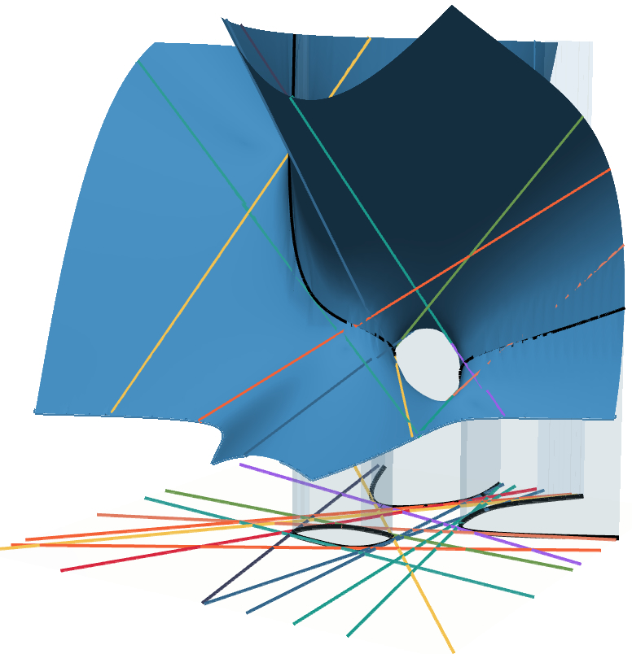
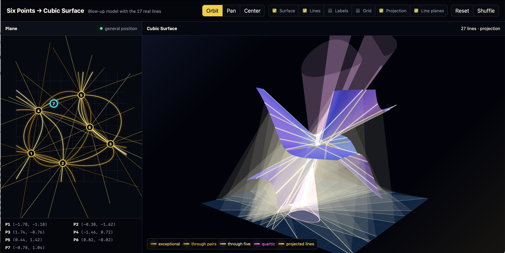

Sean Howe. first DOT last AT utah DOT edu. JWB 323.

A randomly generated cubic surface with its real lines. Its shadow on the plane below is outlined by a quartic curve, and the lines project to bitangents of the quartic.
Click the picture for an interactive viewer, and scroll down to "visualizations" below for more cool things like this.
Are you looking for a conference I am organizing but, through some hyperlink mischief, ended up here instead? Scroll no further:
The Australian Direction (August 10-14, 2026)
Hot topics: Geometric Sen theory, the p-adic Simpson correspondence, and modularity (February 22-26, 2027)
contact info
E-mail: first DOT last AT utah DOT edu.
Office: JWB 323
Mailing address: University of Utah Department of Mathematics, 155 S 1400 E, Salt Lake City, UT 84112
I do not use an office phone. If you need a phone number, e.g., when filling out a form so I can submit a recommendation letter for you, you can use the math department number: +1 801 581 6851
bio info
My CV (updated 2025-04-03).
My research is currently supported by the NSF under grants DMS-2201112, DMS-2501816, and DMS-2540284, and by the Simons Foundation through the Travel Support for Mathematicians program
Since July 2019, I have been an Assistant Professor in the Department of Mathematics at the University of Utah. In the academic year 2023-2024 I was a Friends of the Institute for Advanced Study Member at the special year on p-adic arithmetic geometry at the Institute for Advanced Study.
From September 2017 to June 2019, I was an NSF Postdoctoral Scholar at Stanford University. In June 2017, I received my PhD from the University of Chicago, advised by Matt Emerton. In July 2012 I received a joint master's degree from Leiden University
and Universite Paris-Sud 11 through the ALGANT integrated masters course. I did my undergraduate degree at the University of Arizona.
I work in arithmetic and algebraic geometry, representation theory, and number theory (though, it seems increasingly likely that I may actually be a p-adic geometer in denial).
photo
Professional photographers took these pictures!
papers
preprints:
-
The relativistic p-adic sunscreen conjecture.
Sean Howe.
arXiv:2604.01245. Video (CIRM 2026).
- Admissible pairs and p-adic Hodge structures III: Variation and unlikely intersection
Sean Howe and Christian Klevdal.
arXiv:2603.22610
-
The geometric Sen morphism is the unique lift of the Kodaira-Spencer
morphism
Sean Howe
arXiv:2512.09669
-
The de Jong fundamental group of a non-trivial abelian variety is
non-abelian
Sean Howe
arXiv:2512.09661
-
The de Jong fundamental group of P^1_C depends on C and is
not always topologically countably generated
Sean Howe
arXiv:2512.09651
-
A cohomological smoothness conjecture for moduli of mixed characteristic
local shtukas with one leg
Sean Howe
arXiv:2508.11595
- Inscription, twistors, and p-adic periods
Sean Howe
arXiv:2508.11589
Note: this is an updated and expanded version of the
preprint "Inscription and p-adic periods" previously posted on this
page. It now includes the results on "Inscribed twistors" that were
announced in that version, and the section on cohomological smoothness
has been separated into a different paper (above).
-
p-adic Fourier theory in families
Andrew Graham, Pol van Hoften, and Sean Howe.
arXiv:2507.05374
- The completed Kirillov model and local-global compatibility for functions on Igusa varieties
Sean Howe.
arXiv:2506.24089
- Equidistribution and arithmetic Λ-distributions.
Matthew Bertucci and Sean Howe.
arXiv:2505.24748
- The negative σ-moment generating function.
Sean Howe.
arXiv:2505.01205
- Random matrix statistics and zeroes of L-functions via probability in λ-rings
Sean Howe.
arXiv:2412.19295
published/to appear:
- Transitivity of the B^+_dR loop group action on Schubert cells.
Sean Howe. To appear in Proceedings of the American Mathematical Society
arXiv:2505.01204
- Characterizing perfectoid covers of abelian varieties
Rebecca Bellovin, Hanlin Cai, and Sean Howe (with an appendix by Tongmu He). To appear in Algebraic Geometry.
arXiv:2501.03974
- Admissible pairs and p-adic Hodge structures II: The bi-analytic Ax-Lindemann theorem
Sean Howe and Christian Klevdal. Inventiones Mathematicae, Volume 244, pages 455-530 (2026)
journal (view only open access) · arXiv:2308.11064 (Note that the theorem numbering is different in the published version due to journal conventions; we plan to update it on the arXiv version to match soon)
- Admissible pairs and p-adic Hodge structures I: Transcendence of the de Rham lattice
Sean Howe and Christian Klevdal. Algebra & Number Theory 20-5 (2026), 971-1028.
journal (open access) ·
arXiv:2308.11065
- Cohomological and motivic inclusion-exclusion.
Ronno Das and Sean Howe. Compositio Mathematica, Volume 160, Issue 9, September 2024, pp. 2228-2283
journal (open access) · arXiv:2204.04165
- The conjugate uniformization via 1-motives.
Sean Howe, Jackson Morrow, and Peter Wear. Mathematische Zeitschrift 307, 47 (2024). 20 pages.
journal (view only open access) ·
arXiv:2208.10551
- Slope classicality in higher Coleman theory via highest weight vectors in completed cohomology.
Sean Howe. Proceedings of the National Academy of Sciences. Vol. 19, No. 45, November 2022. 3 pages.
journal (open access) · arXiv:2111.15576
- Zeta statistics and Hadamard functions.
Margaret Bilu, Ronno Das, and Sean Howe. Advances in Mathematics. Volume 407. October 2022. 68 pages.
journal (open access) ·
arXiv:2012.14841
- The spectral p-adic Jacquet-Langlands correspondence and a question of Serre.
Sean Howe. Compositio Mathematica, 158(2), pp. 245-286. 2022.
journal (open access) ·
arXiv:1806.06807
(Note: Some results in the earlier arXiv version have been split off to appear in another work in progress.)
- Motivic Euler products in motivic statistics.
Margaret Bilu and Sean Howe. Algebra and Number Theory, Vol. 15 (2021), No. 9, pp. 2195-2259.
journal · arXiv:1910.05207
- Overconvergent modular forms are highest weight vectors in the Hodge-Tate weight zero part of completed cohomology.
Sean Howe. Forum of Mathematics, Sigma. Vol. 9:e17 (2021) pp. 1-24.
journal (open access) ·
arXiv:2008.08029
- A unipotent circle action on p-adic modular forms.
Sean Howe. Transactions of the American Mathematical Society Series B, 7 (2020), pp. 186-226.
journal (open access) ·
arXiv:2003.11129
- Motivic random variables and representation stability I: Configuration spaces.
Sean Howe. Algebraic & Geometric Topology, 20-6 (2020),pp. 3013-3045.
journal ·
arXiv:1610.05723.
- Motivic random variables and representation stability II: Hypersurface sections.
Sean Howe. Advances in Mathematics, Volume 350, 9 July 2019, Pages 1267-1313.
journal ·
arXiv:1610.05720
- Transcendence of the Hodge-Tate filtration.
Sean Howe. Journal de théorie des nombres de Bordeaux, 30 no. 2 (2018), p. 671-680.
journal ·
arXiv:1610.05242.
- Presentations of quaternionic S-unit groups.
Ted Chinburg, Holley Friedlander, Sean Howe, Michiel Kosters, Bhairav Singh, Matthew Stover, Ying Zhang, and Paul Ziegler. Experimental Mathematics, Volume 24, Issue 2 (2015), p. 175-182.
journal · arXiv:1404.6091
- The Log-Convex Density Conjecture and vertical surface area in warped
products.
Sean Howe. Advances in Geometry, 15.4:455--468, 2015.
journal · arXiv:1107.4402
- Isoperimetric problems in sectors with density.
Alexander Diaz, Nate Harman, Sean Howe, and David Thompson. Advances in Geometry, 14.4:589--619, 2012.
journal ·
arXiv:1012.0450
- Steiner and Schwarz symmetrization in warped products and fiber bundles with density.
Frank Morgan, Sean Howe, and Nate Harman. Revista Matematica Iberoamericana,
27(3):909--918, 2011.
journal ·
arXiv:0911.1938
- Isoperimetric inequalities for wave fronts and a generalization of Menzin's conjecture for bicycle monodromy
on surfaces of constant curvature.
Sean Howe, Matt Pancia and Valentin Zakharevich. Advances in Geometry, 11:273--292, 2011.
journal ·
arXiv:0902.0104
theses
- Overconvergent modular forms and the p-adic Jacquet-Langlands correspondence.
Sean Howe, University of Chicago PhD Thesis, 2017. Note: Some of the results of this thesis appear in "The p-adic Jacquet-Langlands correspondence and a question of Serre," above.
knowledge.uchicago.edu · local pdf
- Higher genus counterexamples to relative Manin-Mumford.
Sean Howe, ALGANT Master's
thesis.
algant.eu
teaching
These days I use Canvas pretty much exclusively for course materials, but for some older courses you will find websites with interesting things on them below!
- 2026 - Spring - Math 6180. Topics in complex geometry.
- 2025 - Fall - Math 1105. Business Mathematics.
- 2025 - Fall - Math 6950. Topics in Algebraic Topology.
- 2023 - Spring - Math 4400. Introduction to Number Theory.
- 2023 - Spring - Math 1220. Calculus II (online).
- 2022 - Fall - Math 2270 (2 sections). Linear Algebra.
- 2022 - Spring - Math 4400. Introduction to Number Theory.
- 2021 - Fall - Math 6370. Algebraic Number Theory.
- 2021 - Summer - pre-REU
- 2021 - Spring - Math 6320. Modern Algebra II.
- 2020 - Fall - Math 6370. An elementary but modern introduction to p-adic Hodge theory.
- 2020 - Summer - pre-REU.
- 2020 - Spring - Math 6320. Modern Algebra II.
visualizations
These are some visualizations I have made using Codex [obviously?]
- Gallery of 500 randomly generated cubic surfaces with their real lines projecting to bitangents of their quartic shadow (like the picture at the very top of this page). The projection is from the vertical point at infinity; the affine chart was chosen so that this point lies on the surface.
- Dynamic cubic surface via blow-up with lines and projection.
A (smooth) real cubic surface can have 3, 7, 15, or 27 lines. With the Gaussian random coefficients used in the gallery above, it's very rare to land in a component with 27 lines, and there are none in the gallery. But one can always construct a real cubic surface with 27 lines direclty by blowing up 6 real points in general positon on a plane. This app allows you to dynamically move around the configuration of points that are blown up as well as a 7th point from which the projection is made. The surface lines, etc. all update as you move the points around.

PhD students
If you are a University of Utah PhD student considering working with me then I will be happy to meet with you to discuss options; send me an email to schedule a time. If you think you are interested in the kinds of mathematics I work on, then, before picking an advisor, you should also speak with (at least!) Aaron Bertram, Srikanth Iyengar, Gordan Savin, Karl Schwede, David Schwein, and Uri Shapira, all of whom have some overlap! I also frequently co-advise students, and it can be to your benefit to have two advisors.
Current (alphabetical by last name):
Graduated (alphabetical by last name):
undergraduate research mentoring
I regularly supervise undergraduate research projects. Some highlights of past students' work:
If you are an undergraduate at the University of Utah interested in working on a research project with me, please get in touch using the contact info found above (you may also want to check out this page, this page, and/or this page for information about getting paid!).
If you are an undergraduate at another institution then, due to time constraints, it is extremely unlikely that I will be able to work with you on an individual research project on an ad hoc basis. Sometimes, however, I work with external undergraduates in a more systematic way. Upcoming opportunities:
- In summer 2025, I ran a research project through the Polymath Jr online REU. There is a good chance I will do it again!
other mathematical writing
Some of these are old and may be be quite rough, sorry!
mathematica notebooks
(provided as-is; feel free to use, and let me know if you do something cool!)
- Root Loops: Dynamically draws roots of a one-parameter family of polynomials.
- random-cubic-lines.nb: Generates and displays a random cubic surface with its real lines.
- random-surface.nb: Generates and displays a random surface (can vary degree)
- random-curve.nb: Generates and displays a random curve (can vary degree)